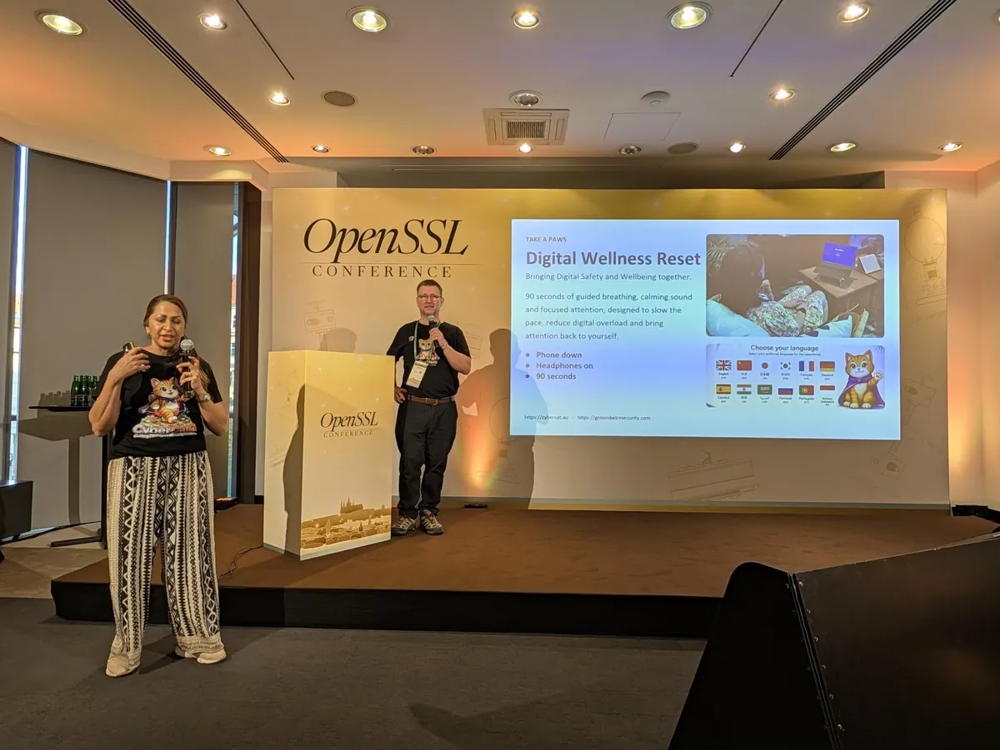
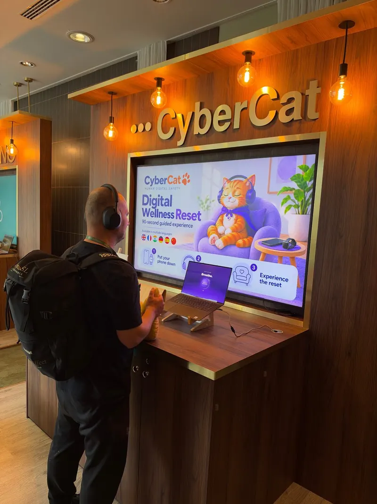
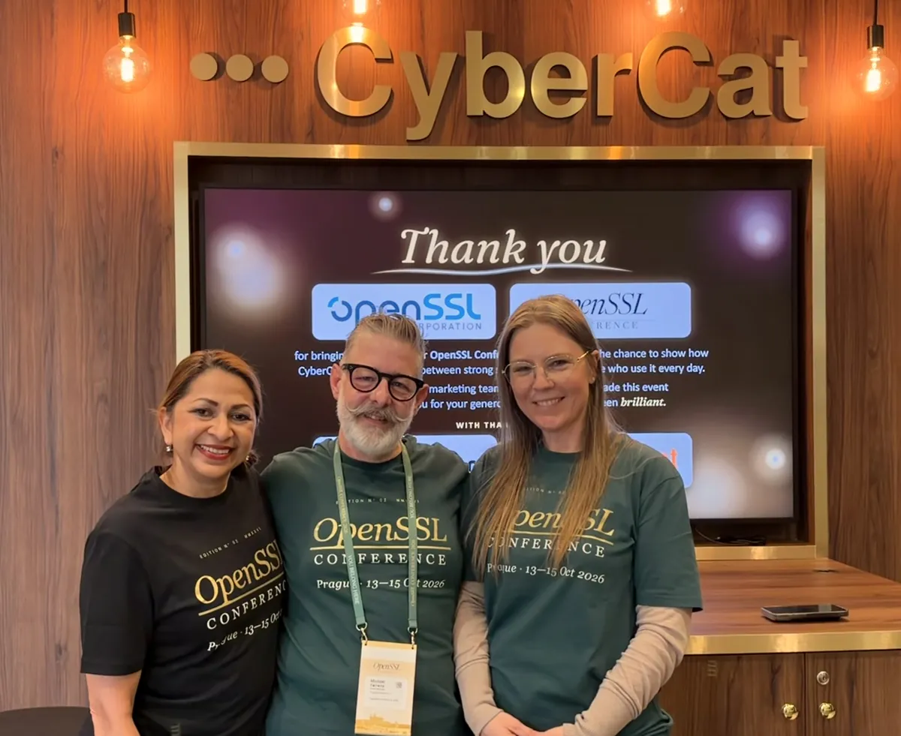

What happens when you bring a 90-second digital wellness experience to a conference full of cybersecurity and technology specialists?
At the OpenSSL Conference in Prague, run by the OpenSSL Corporation and held from 13 to 15 October 2026, we found out. CyberCat invited delegates to step away from their screens, put on headphones and take the Digital Wellness Reset.
The conference brought together people working on the technology that helps secure the digital world. We came to talk about another part of that picture: the people who use technology every day.

Technology protects systems. People still make decisions.
Sangeeta Devi and James Bourne introduced CyberCat in the conference’s Community Track. The message was simple. Software, encryption and technical controls matter. But people still decide which messages to trust, which requests to approve and which links to click.
CyberCat helps people recognise pressure, question unusual requests and build practical online habits. Our PAWS approach gives them a response they can remember: Pause, Assess, Walk away, Separately verify.
A different experience at a technical conference
The Digital Wellness Reset is a short, guided headphone experience with music and simple messages. It is not a technical demonstration or another lecture. Delegates tried it in our Wellness Corner throughout the conference.
It gave delegates something to do, rather than another message to read. Carla, a delegate at the conference, described it as “a very clever way of conveying how to be cyber safe out there.”

What Prague taught us
- The pause is universal. Security specialists in Prague responded in the same way as spa and wellness professionals in Fiji. Pressure affects everyone.
- Experts want simple too. A clear habit is easier to share with teams, families and users than a technical explanation.
- Wellbeing and safety belong together. A calm moment is a practical way to start a conversation about safer digital decisions.

Bring CyberCat to your next conference
Digital Wellness Reset experiences, conference activations and practical digital safety sessions.